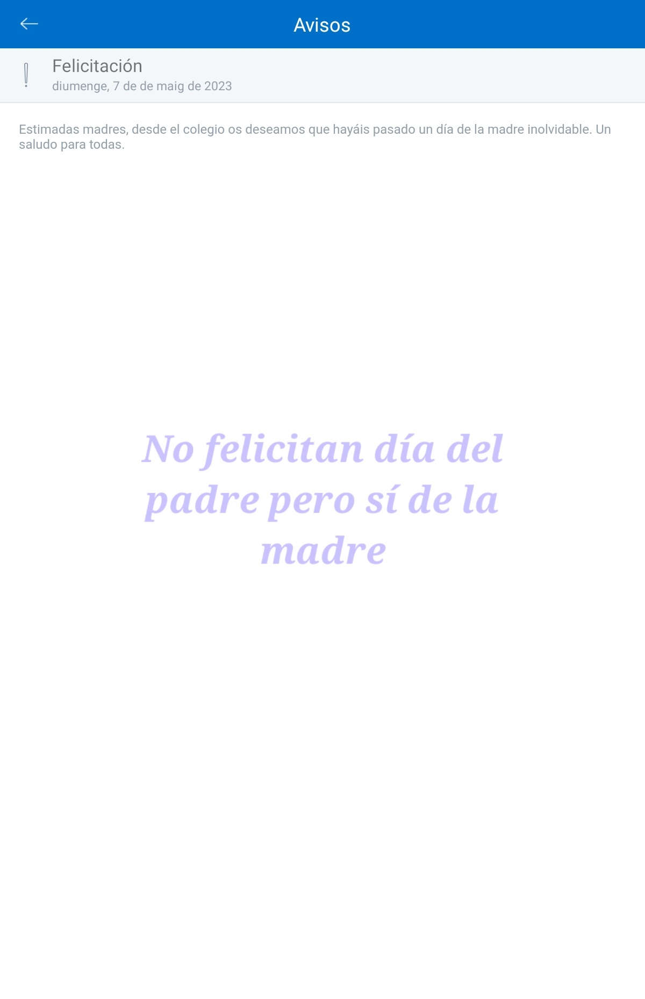

¿Biblioteca en el colegio? Existe pero se detuvo durante la pandemia, ahora no está abierta a sacar libros. En mayo 2023 deciden recaudar fondos para ponerle tarima. Finalmente no se hace la fiesta para recaudar fondis.
Fiesta final de curso con colchonetas hinchables.
No me siento cómodo con la segregación de sexos sutil como hacer fotografías solo de chicas y solo de chicos (vestid@s de chulap@, con pijama).
Queja: No felicitan día del padre pero sí de la madre.

No voy a poder mantener comedor porque me ha puesto cuatro demandas y me está demandando dinero por todas partes. Yo vivo de alquiler a la espera de resolver la custodia de la peque, pero ya no puedo mantener más, como siga así me veo que voy a tener que sacarla del cole.
Hola. Al director le parece bien lo de la Fundación ¿Podéis mirar a ver si os pueden pasar la información o concertar una cita directamente? Gracias!
No estoy de acuerdo con que se penalice a los niños cuando se les pide una aportación voluntaria a los padres. Cuando desde el ampa estamos intentando lidiar con que no se aporte y no afecte a los niños.
Matrícula siguiente curso y además preguntar por el menú celíaco
Castillos hinchables. Harán fiesta y quien pague tendrán ticket extra.
El viernes 27
Buscar menores a prisión
Escribir a Javi con turnos del AMPA para el viernes
Le debemos las agendas al Colegio.
Esta semana no voy a tener tiempo de acercarme por visitas. Podéis saca listado de personas que pagan, ingresos?